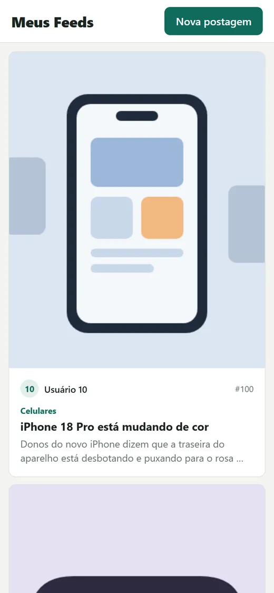
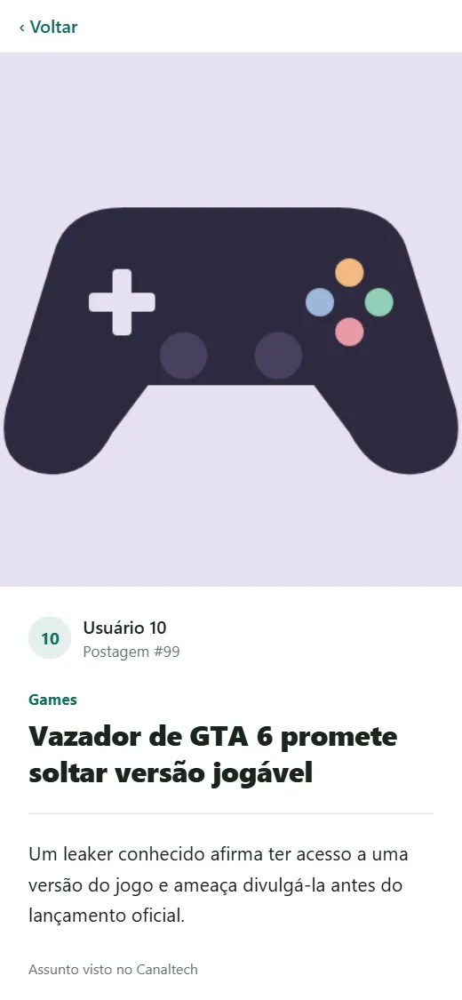
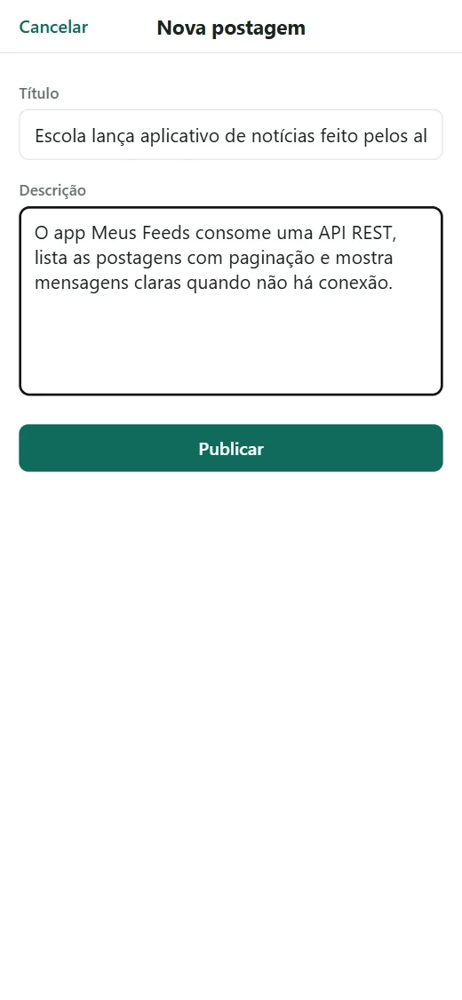
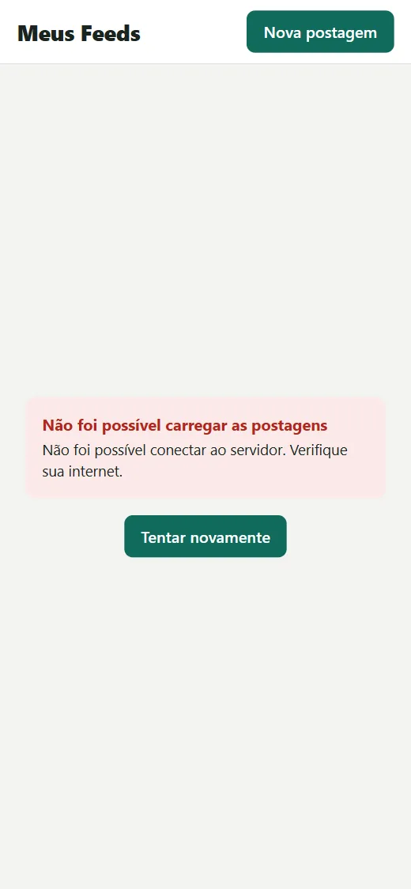

← Projetos da Etec
Programação de Aplicativos Mobile II
Meus Feeds
App que consome uma API REST: lista paginada de postagens, tela de detalhes, nova postagem e mensagens de erro claras quando não há conexão.
- Matéria
- Programação de Aplicativos Mobile II
- Escola
- Etec Dr. Demétrio Azevedo Jr.
- Tecnologias
- React Native, Expo, API REST
O que o app faz
O app busca as postagens numa API REST, mostra a lista com paginação e abre cada postagem em uma tela de detalhes. A tela de nova postagem envia os dados para a API. Quando não há internet, o app explica o problema e oferece um botão para tentar de novo, em vez de ficar carregando para sempre.
Telas



